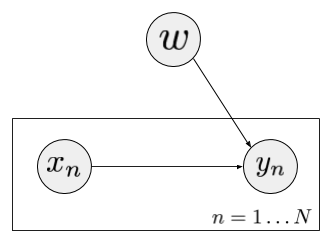

Sand and Diamond from My Life
I will start concise presentation of works done by others through exploratory, experimentary practice. This blog is a start of Ferenc Huszar's series blogs. His blogs continually demonstrates the use of GANs as a learning mechanism for implicit generative models, such as a variational distribution defined implicitly by a neural network for easy sampling and posterior inference.
The problem is kept simple and concise for exploration as a beginner. It is Bayesian Logistic Regression (BLR), the traditional logistic regression formulation augmented with prior on weight $ w $.
So let us first restate the Bayesian formulation of logistic regression. BLR can be depicted as the above graphical model. $x_n $ is the feature vector of a sample point, $ y_n $ is its corresponding label, $ y_n \in {0,1} $. For the convenience of visualization, I will set that $ x_n \in \mathbb{R}^2 $. For every sample point, the probability of its label is defined as: $$ P(y_n | \mathbb{w}; x_n, b) = p_i^{\mathbb{1}[y_n=1]} (1-p_i)^{\mathbb{1}[y_n=0]} $$ $ \mathbb{1}[\cdot] $ is the indicator function, where $$ p_i = \frac{1}{1 + exp(-b - \mathbb{w}^T x_n )} $$ $ p_i $ is the logistic sigmod function value of $ (-b - \mathbb{w}^T x) $. To clarify notation, $ P(\cdot) $ is used as a probability (measure) operator, the vertical bar $ | $ means that the expression before is conditioning on the after, and the colon $ ; $ means expressions after are seen as constant. See the comment.
Comment. More words on the notations. In the book Pattern Recognition and Machine Learning (PRML), every expressions which have the semantic meaning 'observed'/'given'/'conditioned on' are after vertical bar '|'. E.g. $ p(t|\pi, \mathbb{\mu_1}, \mathbb{\mu_2}, \mathbb{\Sigma}) $, here we don't know whether $ \pi, \mathbb{\mu_1}, \mathbb{\mu_2}, \mathbb{\Sigma} $ are seen as random variables or not as within Bayesian context. In the book Pattern Classification, the notation is consistent with PRML. In Machine Learning: A Probabilistic Perspective (MLaPP), the definition of logistic regression model is: $ p(y | x, \mathbb{w}) = Ber(y | sigm(\mathbb{w}^T x)) $, whereas in PRML is: $ p(t | \mathbb{w}) = y_n^{t_n} \{ 1-y_n \}^{1-t_n} $, where $ y_n = p(\mathcal{C}_1 | \phi_n)$ and $ \phi_n = \phi(x_n) $. As for MLaPP, it is not clear whether $ x $ is seen as a random variable or not, and both books tacle with Bayesian approach towards logistic regression later on. To be more clarified, I would like to propose the use of colon $ ; $ symbol, and the conditional probability will always have the following form: $ P(\cdot | \cdot ; \cdot) $. We always see expressions after | and before ; as r.v.s and expression after ; as constants. This leads to the expression in our first equation, i.e. $ P(y_n | \mathbb{w}; x_n, b) $. And in $ \mathcal{N}(x; \mathbb{\mu}, \mathbb{\Sigma}) $, $ \mathbb{\mu} $ and $ \mathbb{\Sigma} $ are not seen as r.v.s.
The so-called Bayesian is that we put prior knowledge on the value of $ \mathbb{w} $, that is we assume a Bivariate Gaussian distribution: $$ P(w) = \mathcal{N}(0, \sigma^2 \mathbb{I}_2) = \frac{1}{2\pi} \frac{1}{\sigma} exp\{ -\frac{||x||^2}{2\sigma^2} \} $$ Since we know Multivariate Gaussian is: $$ \mathcal{N}(x;\mathbb{\mu}, \mathbb{\Sigma}) = \frac{1}{(2\pi)^{D/2}} \frac{1}{|\mathbb{\Sigma}|^{1/2}} exp\{ -\frac{1}{2} (x - \mathbb{\mu})^T \Sigma^{-1} (x - \mathbb{\mu}) \} $$ Here, the assumed distribution on $ \mathbb{w} $ is spherical Gaussian with diagnal covariance matrix. We can go on to write down the probability of the data set $ \mathcal{D} $ given we know the $ \mathbb{w} $, that is $ P(\mathcal{D} | \mathbb{w}; b) $. And $ \mathcal{D} $ stands for $ \{ (x_n, y_n)_{n=1}^{N} \} $. We have: $$ P(\mathcal{D} | w; b) = P(\{y_n\}_{n=1}^{N} | w; \{x_n\}_{n=1}^{N}, b) $$ This is called the likelihood of the data under the model parameterized by $ \mathbb{w} $. We want to perform posterior inference on this parameter, that is to derive a computational form of $ P(\mathbb{w} | \mathcal{D} ) $. We know posterior estimation is not point estimation but density/distribution estimation. We use Bayes formula to get: $$ P(\mathbb{w} | \mathcal{D}) = \frac{ P(\mathcal{D} | w) P(w)}{ P(\mathcal{D}) } = \frac{ P(\mathcal{D} | w) P(w)}{ \int_{\mathbb{w}} d\mathbb{w} P(\mathcal{D} | w) P(w) } $$ Very different from Maximum Likelihood Estimation (MLE), to which the computational issue is optimization (maximazing log-likelohood function of data), Bayesian inference or posterior estimation is solving an intractable intergal. Traditional ways of preventing intractability is to restrict prior and posterior to be conjugated, preserve exactability whereas introduce limitations. In this blog, we resort to one popular approximation method - Variational Inference which uses a tractable (easy to sample from), parameterized distribution to approximate the real one by minimizing their KL divergence: $$ KL(Q || P) = \int_{\mathbb{w}} Q log \frac{Q}{P} $$ where $ P $ stands for $ P(\mathcal{D} | w) $. In next section, I will derive a form of this KL divergence and show how to parameterize $ Q $ so we can simultaneously minimize KL and preserve expressibility of $ Q $.